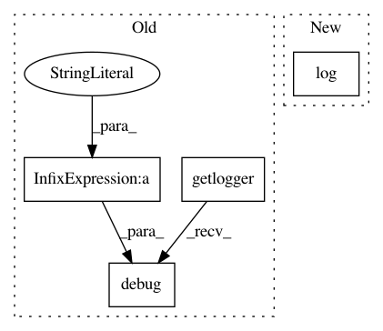

19db3e8350cefa14a282073c6837ef1b5263f309,reframe/core/schedulers/slurm.py,SlurmJobScheduler,filternodes,#SlurmJobScheduler#Any#Any#,269
Before Change
else:
default_partition = self._get_default_partition()
partitions = {default_partition} if default_partition else set()
getlogger().debug("flex_alloc_nodes: default partition: %s" %
default_partition)
nodes = {n for n in nodes if n.partitions >= partitions}
getlogger().debug(
"flex_alloc_nodes: filtering nodes by partition(s) %s: "
After Change
if reservation:
reservation = reservation.strip()
nodes &= self._get_reservation_nodes(reservation)
self.log(f"[F] Filtering nodes by reservation {reservation}: "
f"available nodes now: {len(nodes)}")
if partitions:
partitions = set(partitions.strip().split(","))
else:
In pattern: SUPERPATTERN
Frequency: 3
Non-data size: 4
Instances
Project Name: eth-cscs/reframe
Commit Name: 19db3e8350cefa14a282073c6837ef1b5263f309
Time: 2020-11-03
Author: karakasis@cscs.ch
File Name: reframe/core/schedulers/slurm.py
Class Name: SlurmJobScheduler
Method Name: filternodes
Project Name: eth-cscs/reframe
Commit Name: de5c7cbc270b431e4a0b5be554cd8f4ca1c7544c
Time: 2020-11-03
Author: karakasis@cscs.ch
File Name: reframe/core/schedulers/slurm.py
Class Name: SlurmJobScheduler
Method Name: poll
Project Name: eth-cscs/reframe
Commit Name: 19db3e8350cefa14a282073c6837ef1b5263f309
Time: 2020-11-03
Author: karakasis@cscs.ch
File Name: reframe/core/schedulers/slurm.py
Class Name: SlurmJobScheduler
Method Name: _merge_files